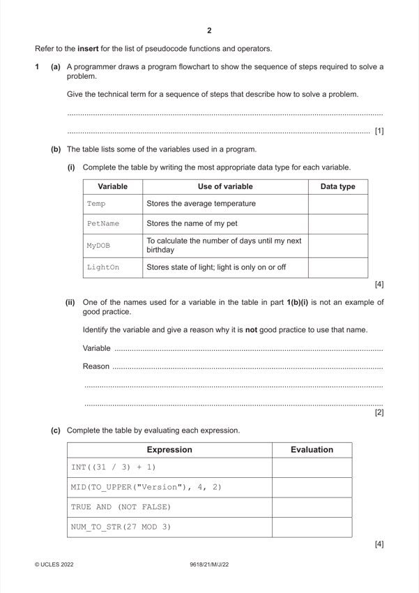

Question 1

Original paper page 2
Part 1(a) — solution
An algorithm 1
Mark points
- Include the ideas shown in the solution above.
Part 1(b)(i) — solution
Answer: 4
4
Variable Use of variable Data type
Temp Stores the average temperature REAL
PetName Stores the name of my pet STRING
MyDOB To calculate how many days until my DATE
next birthday
LightOn Stores state of light; light is only on or off BOOLEAN
One mark for each data type
Mark points
- Correct result: 4
Part 1(b)(ii) — solution
One mark for variable name, and one for reason 2
Variable: Temp
Reason: Name does not indicate what the variable is used for
Mark points
- Include the ideas shown in the solution above.
Part 1(c) — solution
Answer: 4
4
Expression Evaluation
INT((31 / 3) + 1) 11
MID(TO_UPPER("Version"), 4, 2) "SI"
TRUE AND (NOT FALSE) TRUE
NUM_TO_STR(27 MOD 3) "0"
One mark per row
Mark points
- Correct result: 4
Part 1 — solution
Declare loop variable and counter as integers, counter initialised
Mark points
- Include the ideas shown in the solution above.
Part 1 — solution
Declare loop variable and counter as integers, , counter initialised
Mark points
- Include the ideas shown in the solution above.
Part 1 — solution
Functions header including parameter, ending and return type
Mark points
- Include the ideas shown in the solution above.
Part 1 — solution
Declare all local variables used, attempted solution has to be reasonable
Mark points
- Include the ideas shown in the solution above.